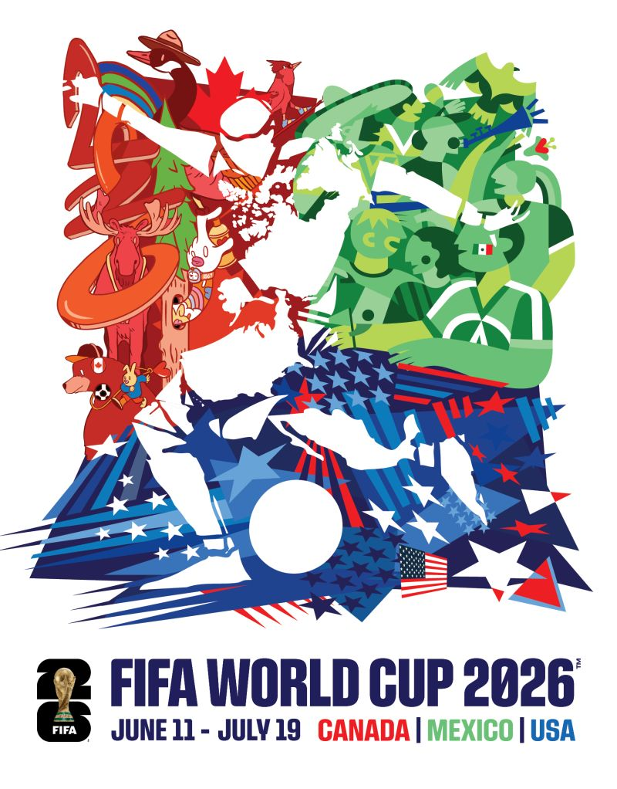

The 2026 FIFA World Cup[A] was the 23rd FIFA World Cup, the quadrennial international men's soccer championship contested by the national teams of the member associations of FIFA.
The tournament began on June 11, 2026, and concluded on July 19 with Spain winning the championship for the second time.
It was jointly hosted by 16 cities—11 in the United States, 3 in Mexico, and 2 in Canada.
The tournament was the first FIFA World Cup to be hosted by three countries and the first to include 48 teams, an expansion from the previous 32-team format.The 2026 tournament was the second World Cup to be hosted by multiple nations, after the 2002 edition.
Mexico became the first country to host the World Cup three times, having hosted the 1970 and 1986 tournaments.
The United States previously hosted the World Cup in 1994, while it was Canada's first time hosting the tournament.
